Code
options(kableExtra.latex.load_packages = FALSE)options(kableExtra.latex.load_packages = FALSE)Housing affordability has emerged as one of the most pressing socioeconomic challenges in Türkiye over the past decade. This study investigates the key drivers of the sharp and sustained rise in housing prices between 2014 and 2024, drawing on four official monthly time-series datasets obtained from the Central Bank of the Republic of Türkiye (TCMB/EVDS): the House Price Index (HPI), housing sales statistics, USD/EUR exchange rates, and credit card sectoral expenditure data. Through exploratory analysis, correlation testing, regional comparison, and multiple linear regression modelling, we find that exchange rate depreciation and broad consumer spending inflation are the dominant macroeconomic forces behind rising house prices, while sales volumes display an inverse relationship with price levels — consistent with demand compression at high price levels. Regional heterogeneity is substantial: İstanbul and western metropolitan areas lead price growth, whereas interior Anatolian regions lag considerably. Our model explains approximately 95% of the variance in the national HPI, suggesting that macroeconomic indicators are strong predictors of housing price trajectories in Türkiye.
We want to look into the following question for this project:
Why have house prices in Turkey gone up in the last ten years?
To answer this question, we made a dataset using four monthly time-series datasets from the Central Bank of the Republic of Türkiye’s (TCMB) Electronic Data Delivery System (EVDS). These datasets have:
Housing Price Index
Sales of Houses
Exchange Rates (USD/TRY and EUR/TRY)
Credit Card Sectoral Expenditures
We chose this topic because the cost of housing has become one of the most important social and economic issues in Türkiye. It is important to know what caused this rise in order to make good decisions about policy and the economy. This problem is also a good fit for a data analytics approach because it needs to combine multiple datasets, do preprocessing, and look at how things change over time and in different areas.
We want to find the main things that cause housing prices to go up. Specifically, we want to look at:
How exchange rates affect the price of homes
The link between changes in housing prices and demand (sales)
The function of consumption behavior (credit card expenditure) as an indicator of demand conditions.
Differences in how housing works in different regions
You can see Our data in R Data format below.
url <- "https://raw.githubusercontent.com/emu-hacettepe-analytics/emu660-spring2026-ofdemirci/main/Data/Project_Data.RData"
download.file(url, destfile = "Project_Data.RData", mode = "wb")
load("Project_Data.RData")
ls()[1] "Conversion_Rates" "Expense_Quantity" "Konut_Index_Sales"
[4] "url" The data used in this project were obtained from the Electronic Data Delivery System (EVDS) of the Central Bank of the Republic of Türkiye (TCMB). EVDS provides official, high-frequency economic data and is widely used for academic and professional analysis.
The project is based on four datasets:
House Price Index (HPI)
Monthly housing price index at national and regional levels
House Sales Statistics
Monthly housing sales data at the provincial level
Exchange Rates (USD, EUR)
Monthly exchange rate data
Credit Card Sectoral Expenditures
Monthly sector-based credit card spending data
The processed dataset consists of three main analytical tables:
Description:
This table contains the columns Year, Month, USD Conversion Rate, and EUR Conversion Rate. Represents monthly exchange rate movements. These variables are used as indicators of macroeconomic conditions and cost-side pressures that may affect housing prices.
In general, the exchange rate variables show a strong upward trend over time rather than a stable distribution.
library(dplyr)
library(ggplot2)
library(scales)
usd_eur <- Conversion_Rates %>%
filter(Year < 2026) %>%
mutate(Date = as.Date(sprintf("%d-%02d-01", Year, Month)))
ggplot(usd_eur, aes(x = Date)) +
geom_line(aes(y = USD, color = "USD")) +
geom_line(aes(y = EUR, color = "EUR")) +
scale_x_date(date_breaks = "2 years", date_labels = "%Y") +
scale_y_continuous(labels = label_number(accuracy = 0.1)) +
labs(
title = "Exchange Rates Over Time",
x = NULL,
y = "TRY per Foreign Currency",
color = "Currency"
) +
theme_minimal()
Description:
This table contains Year, Month, Expense Type, and Quantity.
Expense Type identifies the spending category, and Quantity gives the corresponding spending amount for that month.
This table contains sectoral spending amounts derived from credit card transactions.
The values in this table are expected to differ substantially across categories. Some categories such as retail, food, fuel, and e-commerce are likely to have much larger values than others.
library(dplyr)
library(ggplot2)
library(scales)
expense_quantity <- Expense_Quantity %>%
filter(Year < 2026) %>%
mutate(Date = as.Date(sprintf("%d-%02d-01", Year, Month)))
ggplot(
expense_quantity %>%
filter(Expense_Type %in% c("E-Alışveriş", "Çeşitli Gıda", "Giyim ve Aksesuar", "Benzin ve Yakıt İstasyonları")),
aes(x = Date, y = Quantity / 1e3, color = Expense_Type)
) +
geom_line() +
scale_x_date(date_breaks = "2 years", date_labels = "%Y") +
scale_y_continuous(labels = label_comma(accuracy = 1)) +
labs(
title = "Credit Card Expenditures for Selected Categories",
x = NULL,
y = "Spending (Billion TRY)",
color = "Expense Type"
) +
theme_minimal() +
theme(legend.position = "bottom",
legend.text = element_text(size = 8))
Description:
This is the main table for the project and contains Year, Month, Region, House Price Index, and Total Sales.
Region represents the housing price index regions as in NUTS2 level, House Price Index shows the monthly house price index for that region, and Total Sales gives the aggregated monthly house sales value for the same region.
library(dplyr)
library(ggplot2)
library(scales)
konut_index_sales <- Konut_Index_Sales %>%
filter(Year < 2026) %>%
mutate(Date = as.Date(sprintf("%d-%02d-01", Year, Month)))
ggplot(
konut_index_sales %>% filter(Region == "Türkiye"),
aes(x = Date, y = Konut_Endeksi)
) +
geom_line() +
scale_x_date(date_breaks = "2 years", date_labels = "%Y") +
scale_y_continuous(labels = label_comma(accuracy = 1)) +
labs(
title = "House Price Index in Türkiye Over Time",
x = NULL,
y = "House Price Index"
) +
theme_minimal()
library(dplyr)
library(ggplot2)
library(scales)
ggplot(
Konut_Index_Sales %>%
filter(Year < 2026) %>%
mutate(Date = as.Date(sprintf("%d-%02d-01", Year, Month))) %>%
filter(Region %in% c("Türkiye", "İstanbul", "İzmir", "Ankara", "Adana, Mersin")),
aes(x = Date, y = Total_Sales, color = Region)
) +
geom_line() +
scale_x_date(date_breaks = "2 years", date_labels = "%Y") +
scale_y_continuous(labels = label_comma(accuracy = 1)) +
labs(
title = "Total House Sales for Selected Regions",
x = NULL,
y = "Units Sold",
color = "Region"
) +
theme_minimal() +
theme(legend.position = "bottom")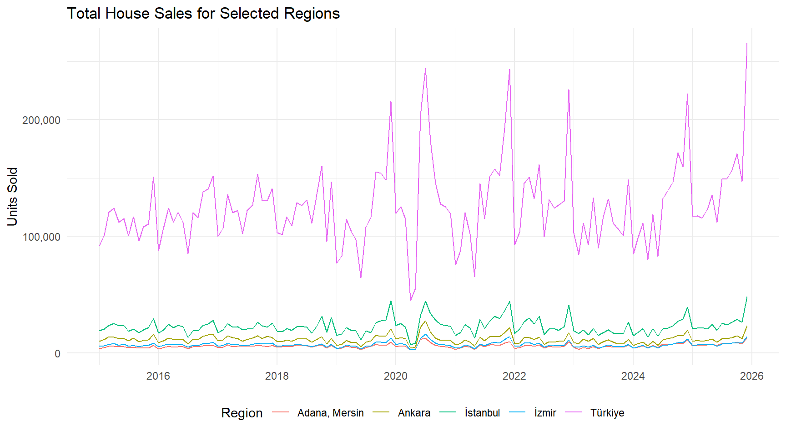
Housing prices are one of the most important economic and social issues in Türkiye. The rapid increase in housing prices has significant implications for affordability, investment decisions, and economic stability.
All datasets are:
Consistent in frequency (monthly)
Long enough for trend analysis
Rich enough for regional comparison
This makes it easy for analyzing.
The raw EVDS datasets were provided in Excel format and contained different structures (wide vs. long) and aggregation levels (province vs. region). We performed preprocessing in Python using pandas to standardize date formats, reshape wide datasets into long format, map categorical codes to meaningful labels, and align all datasets at a consistent monthly and regional level. In particular, house sales data were converted from province-level columns to regional aggregates compatible with the House Price Index. The final result consists of three clean analytical tables ready for further analysis.
Another key issue was that EVDS datasets use coded column names (e.g., KT2, T58, TR62) instead of descriptive labels. To make the data interpretable and consistent across sources, we created mapping dictionaries in Python to translate these codes into meaningful categories, provinces, and regions.
Here you can find our python code.
# We explained the data and the output tables to AI. It gave us this code's first version. Then we fixed it according to our needs
import pandas as pd
from pathlib import Path
downloads = Path.home() / "Downloads"
# Files
kurlar_file = downloads / "Kurlar.xlsx"
kredi_file = downloads / "Kredi Harcama.xlsx"
konut_satis_file = downloads / "Konut Satış.xlsx"
konut_fiyat_file = downloads / "Konut Fiyat Endexi.xlsx"
output_file = downloads / "evds_preprocessed_tables_fixed.xlsx"
# -----------------------------
# Helper
# -----------------------------
def split_year_month(df):
df["Tarih"] = pd.to_datetime(df["Tarih"], format="%Y-%m")
df["Year"] = df["Tarih"].dt.year
df["Month"] = df["Tarih"].dt.month
return df
# -----------------------------
# Read
# -----------------------------
kurlar = split_year_month(pd.read_excel(kurlar_file))
kredi = split_year_month(pd.read_excel(kredi_file))
satis = split_year_month(pd.read_excel(konut_satis_file))
kfe = split_year_month(pd.read_excel(konut_fiyat_file))
# -----------------------------
# TABLE 1: Exchange Rates
# -----------------------------
table_kurlar = (
kurlar[["Year", "Month", "TP_DK_USD_S_YTL", "TP_DK_EUR_S_YTL"]]
.rename(columns={
"TP_DK_USD_S_YTL": "USD",
"TP_DK_EUR_S_YTL": "EUR"
})
)
# -----------------------------
# TABLE 2: Credit Expenditures
# -----------------------------
expense_type_map = {
"TP_KKHARTUT_KT2": "Car Rental",
"TP_KKHARTUT_KT3": "Car Sales/Service",
"TP_KKHARTUT_KT4": "Fuel",
"TP_KKHARTUT_KT5": "Food",
"TP_KKHARTUT_KT6": "Direct Marketing",
"TP_KKHARTUT_KT7": "Education",
"TP_KKHARTUT_KT8": "Electronics",
"TP_KKHARTUT_KT9": "Clothing",
"TP_KKHARTUT_KT10": "Airlines",
"TP_KKHARTUT_KT11": "Services",
"TP_KKHARTUT_KT12": "Accommodation",
"TP_KKHARTUT_KT13": "Social",
"TP_KKHARTUT_KT14": "Entertainment",
"TP_KKHARTUT_KT15": "Jewelry",
"TP_KKHARTUT_KT16": "Retail",
"TP_KKHARTUT_KT17": "Furniture",
"TP_KKHARTUT_KT18": "Construction",
"TP_KKHARTUT_KT19": "Health",
"TP_KKHARTUT_KT20": "Travel",
"TP_KKHARTUT_KT21": "Insurance",
"TP_KKHARTUT_KT22": "Telecom",
"TP_KKHARTUT_KT23": "Hardware",
"TP_KKHARTUT_KT24": "Food Service",
"TP_KKHARTUT_KT25": "Misc",
"TP_KKHARTUT_KT26": "Other",
"TP_KKHARTUT_KT50": "E-Commerce"
}
kredi_cols = [c for c in expense_type_map if c in kredi.columns]
table_kredi = (
kredi.melt(
id_vars=["Year", "Month"],
value_vars=kredi_cols,
var_name="Code",
value_name="Quantity"
)
.assign(Expense_Type=lambda x: x["Code"].map(expense_type_map))
[["Year", "Month", "Expense_Type", "Quantity"]]
)
# -----------------------------
# TABLE 3: Housing Panel
# -----------------------------
provinces = [
"Adana","Adıyaman","Afyonkarahisar","Ağrı","Aksaray","Amasya","Ankara",
"Antalya","Ardahan","Artvin","Aydın","Balıkesir","Bartın","Batman",
"Bayburt","Bilecik","Bingöl","Bitlis","Bolu","Burdur","Bursa","Çanakkale",
"Çankırı","Çorum","Denizli","Diyarbakır","Düzce","Edirne","Elazığ",
"Erzincan","Erzurum","Eskişehir","Gaziantep","Giresun","Gümüşhane",
"Hakkâri","Hatay","Iğdır","Isparta","İstanbul","İzmir","Kahramanmaraş",
"Karabük","Karaman","Kars","Kastamonu","Kayseri","Kırıkkale","Kırklareli",
"Kırşehir","Kilis","Kocaeli","Konya","Kütahya","Malatya","Manisa",
"Mardin","Mersin","Muğla","Muş","Nevşehir","Niğde","Ordu","Osmaniye",
"Rize","Sakarya","Samsun","Siirt","Sinop","Sivas","Şanlıurfa","Şırnak",
"Tekirdağ","Tokat","Trabzon","Tunceli","Uşak","Van","Yalova","Yozgat",
"Zonguldak"
]
code_map = {"TP_AKONUTSAT1_K1": provinces[0]}
for i in range(2, 82):
code_map[f"TP_AKONUTSAT1_T{i}"] = provinces[i-1]
sales_cols = [c for c in satis.columns if c in code_map]
sales_long = (
satis.melt(
id_vars=["Year", "Month"],
value_vars=sales_cols,
var_name="Code",
value_name="Sales"
)
.assign(Province=lambda x: x["Code"].map(code_map))
)
# Region mapping (example simplified)
region_map = {
"Adana":"TR62","Mersin":"TR62","Ankara":"TR51","İstanbul":"TR10"
}
sales_long["Region_Code"] = sales_long["Province"].map(region_map)
sales_region = (
sales_long.groupby(["Year","Month","Region_Code"])["Sales"].sum().reset_index()
)
kfe_map = {
"TP_KFE_TR62":"TR62",
"TP_KFE_TR51":"TR51",
"TP_KFE_TR10":"TR10"
}
kfe_cols = [c for c in kfe_map if c in kfe.columns]
kfe_long = (
kfe.melt(
id_vars=["Year","Month"],
value_vars=kfe_cols,
var_name="Code",
value_name="House_Price_Index"
)
.assign(Region_Code=lambda x: x["Code"].map(kfe_map))
)
table_konut = kfe_long.merge(
sales_region,
on=["Year","Month","Region_Code"]
)
# -----------------------------
# SAVE
# -----------------------------
with pd.ExcelWriter(output_file) as writer:
table_kurlar.to_excel(writer, sheet_name="USD_EUR", index=False)
table_kredi.to_excel(writer, sheet_name="Expense", index=False)
table_konut.to_excel(writer, sheet_name="Housing", index=False)library(dplyr)
library(ggplot2)
library(tidyr)
library(scales)
library(knitr)
library(kableExtra)
load("Project_Data.RData")
cr <- Conversion_Rates %>%
filter(Year < 2026) %>%
mutate(Date = as.Date(sprintf("%d-%02d-01", Year, Month)))
eq <- Expense_Quantity %>%
filter(Year < 2026) %>%
mutate(Date = as.Date(sprintf("%d-%02d-01", Year, Month)))
ks <- Konut_Index_Sales %>%
filter(Year < 2026) %>%
mutate(Date = as.Date(sprintf("%d-%02d-01", Year, Month)))
ks_turkey <- ks %>% filter(Region == "Türkiye")
# Build the shared joined dataset used throughout Analysis
total_cc <- eq %>%
group_by(Year, Month) %>%
summarise(Total_CC = sum(Quantity, na.rm = TRUE), .groups = "drop")
combined <- ks_turkey %>%
inner_join(cr %>% select(Year, Month, USD, EUR), by = c("Year", "Month")) %>%
inner_join(total_cc, by = c("Year", "Month"))We begin by examining the basic descriptive statistics of each key variable to understand their range and scale before looking at relationships.
bind_rows(
ks_turkey %>% summarise(
Variable = "House Price Index",
Min = min(Konut_Endeksi, na.rm = TRUE),
Mean = mean(Konut_Endeksi, na.rm = TRUE),
Median = median(Konut_Endeksi, na.rm = TRUE),
Max = max(Konut_Endeksi, na.rm = TRUE),
SD = sd(Konut_Endeksi, na.rm = TRUE)
),
ks_turkey %>% summarise(
Variable = "Monthly Sales (units)",
Min = min(Total_Sales, na.rm = TRUE),
Mean = mean(Total_Sales, na.rm = TRUE),
Median = median(Total_Sales, na.rm = TRUE),
Max = max(Total_Sales, na.rm = TRUE),
SD = sd(Total_Sales, na.rm = TRUE)
),
cr %>% summarise(
Variable = "USD/TRY Rate",
Min = min(USD, na.rm = TRUE),
Mean = mean(USD, na.rm = TRUE),
Median = median(USD, na.rm = TRUE),
Max = max(USD, na.rm = TRUE),
SD = sd(USD, na.rm = TRUE)
),
cr %>% summarise(
Variable = "EUR/TRY Rate",
Min = min(EUR, na.rm = TRUE),
Mean = mean(EUR, na.rm = TRUE),
Median = median(EUR, na.rm = TRUE),
Max = max(EUR, na.rm = TRUE),
SD = sd(EUR, na.rm = TRUE)
)
) %>%
mutate(across(where(is.numeric), ~ format(round(.x, 1), big.mark = ","))) %>%
kable(caption = "Table 1. Summary Statistics of Key Variables") %>%
kable_styling(bootstrap_options = c("striped", "hover"), full_width = FALSE)| Variable | Min | Mean | Median | Max | SD |
|---|---|---|---|---|---|
| House Price Index | 7.7 | 51.1 | 14.6 | 204.4 | 60.8 |
| Monthly Sales (units) | 45,218.0 | 126,140.7 | 120,437.5 | 265,223.0 | 35,718.6 |
| USD/TRY Rate | 2.1 | 12.6 | 6.1 | 42.7 | 12.4 |
| EUR/TRY Rate | 2.7 | 13.9 | 6.8 | 49.9 | 13.7 |
The House Price Index increased from low initial values to several thousand index points by the end of the sample period, showing the scale of the housing price surge in Türkiye. The exchange rate variables also rose sharply, while monthly sales remained volatile rather than following the same continuous upward pattern. This first descriptive comparison already suggests that price growth was more closely aligned with macroeconomic nominal variables than with transaction volume.
eq %>%
group_by(Expense_Type) %>%
summarise(Total_Billion_TRY = sum(Quantity, na.rm = TRUE) / 1e3, .groups = "drop") %>%
arrange(desc(Total_Billion_TRY)) %>%
slice_head(n = 8) %>%
mutate(Total_Billion_TRY = format(round(Total_Billion_TRY, 0), big.mark = ",")) %>%
kable(col.names = c("Expense Category", "Total Spending (Billion TRY)"),
caption = "Table 2. Top 8 Credit Card Expenditure Categories – Cumulative Total") %>%
kable_styling(bootstrap_options = c("striped", "hover"), full_width = FALSE)| Expense Category | Total Spending (Billion TRY) |
|---|---|
| E-Alışveriş | 15,913,640 |
| Market ve Alışveriş Merkezleri | 10,409,810 |
| Çeşitli Gıda | 3,892,815 |
| Giyim ve Aksesuar | 3,889,505 |
| Benzin ve Yakıt İstasyonları | 3,542,543 |
| Hizmet Sektörleri | 3,486,972 |
| Elektrik-Elektronik Eşya / Bilgisayar | 3,308,526 |
| Yemek | 3,156,894 |
Credit card expenditures are dominated by broad consumption categories such as retail trade, food, fuel, and e-commerce. Construction and furniture may not always be the largest categories, but they remain analytically relevant because they are related to housing investment, renovation activity, and household formation. In this project, total card spending is used mainly as a proxy for the broader nominal consumption and inflation environment.
ggplot(ks_turkey, aes(x = Date, y = Konut_Endeksi)) +
geom_line(color = "#2c7bb6", linewidth = 0.9) +
scale_x_date(date_breaks = "2 years", date_labels = "%Y") +
scale_y_continuous(labels = label_comma(accuracy = 1)) +
labs(title = "Figure 1. National House Price Index Over Time",
x = NULL, y = "House Price Index") +
theme_minimal(base_size = 11)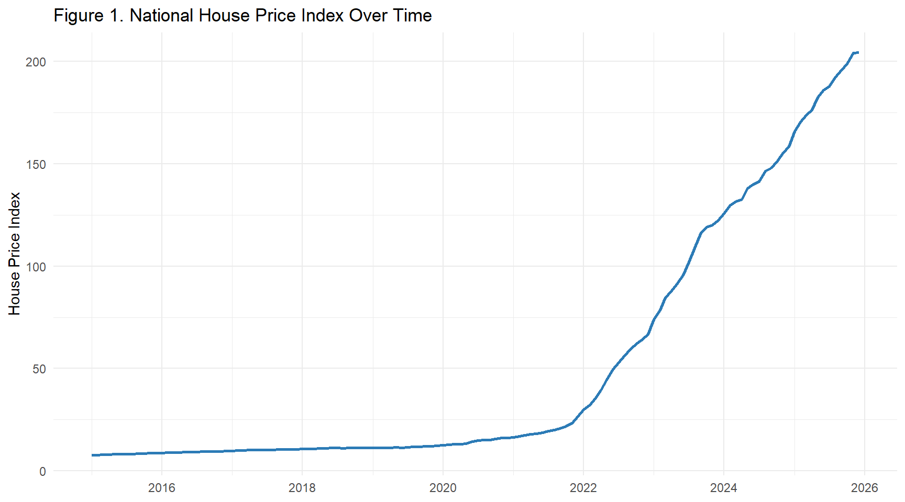
The House Price Index followed a relatively moderate path until approximately 2019, then accelerated sharply after 2020. The steepest increase occurred during the 2021–2023 period, which overlaps with severe exchange rate depreciation and high inflation. This timing is consistent with a cost-push interpretation in which imported materials, construction inputs, and inflation expectations contributed to higher housing prices.
Raw index levels can make any two upward-trending series appear correlated. Year-over-year (YoY) percentage changes are a more meaningful comparison: they show whether sudden currency shocks coincide with sudden house-price jumps, which is a much stronger analytical claim.
yoy <- combined %>%
arrange(Year, Month) %>%
mutate(
HPI_YoY = (Konut_Endeksi / lag(Konut_Endeksi, 12) - 1) * 100,
USD_YoY = (USD / lag(USD, 12) - 1) * 100
) %>%
filter(!is.na(HPI_YoY))
yoy_long <- yoy %>%
select(Date, `HPI Growth (%)` = HPI_YoY, `USD/TRY Growth (%)` = USD_YoY) %>%
pivot_longer(-Date, names_to = "Series", values_to = "YoY_Pct")
ggplot(yoy_long, aes(x = Date, y = YoY_Pct, color = Series)) +
geom_line(linewidth = 0.9) +
geom_hline(yintercept = 0, linetype = "dashed", color = "grey50") +
scale_x_date(date_breaks = "2 years", date_labels = "%Y") +
scale_y_continuous(labels = label_percent(scale = 1, accuracy = 1)) +
scale_color_manual(values = c("HPI Growth (%)" = "#2c7bb6",
"USD/TRY Growth (%)" = "#d7191c")) +
labs(title = "Figure 2. Year-over-Year Growth: House Price Index vs. USD/TRY",
x = NULL, y = "Annual Change (%)", color = NULL) +
theme_minimal(base_size = 11) +
theme(legend.position = "top")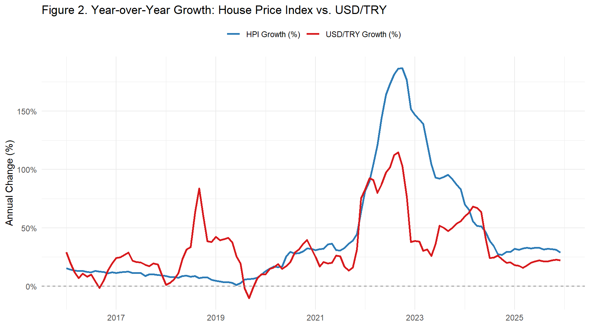
The year-over-year comparison shows that major jumps in USD/TRY growth and HPI growth occur around similar periods, especially during the post-2020 acceleration. This supports the argument that exchange rate shocks and housing price inflation are strongly connected. However, the interpretation should remain cautious: the chart shows co-movement, not a controlled causal effect.
cr_long <- cr %>%
pivot_longer(cols = c(USD, EUR), names_to = "Currency", values_to = "Rate")
ggplot(cr_long, aes(x = Date, y = Rate, color = Currency)) +
geom_line(linewidth = 0.9) +
scale_x_date(date_breaks = "2 years", date_labels = "%Y") +
scale_y_continuous(labels = label_number(accuracy = 0.1)) +
scale_color_manual(values = c("USD" = "#d7191c", "EUR" = "#1a9641")) +
labs(title = "Figure 3. USD/TRY and EUR/TRY Exchange Rates",
x = NULL, y = "TRY per Foreign Currency", color = "Currency") +
theme_minimal(base_size = 11)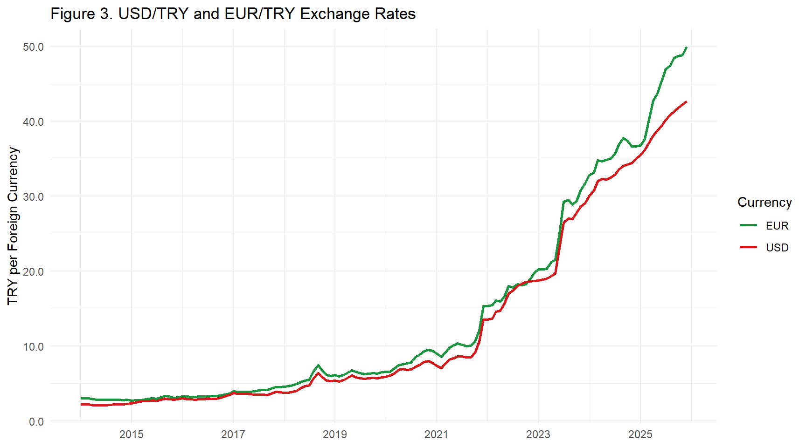
annual_sales <- ks_turkey %>%
group_by(Year) %>%
summarise(Annual_Sales = sum(Total_Sales, na.rm = TRUE), .groups = "drop")
ggplot(annual_sales, aes(x = Year, y = Annual_Sales)) +
geom_line(color = "#74add1", linewidth = 1) +
geom_point(color = "#2c7bb6", size = 3) +
geom_text(aes(label = format(round(Annual_Sales / 1e3), big.mark = ",")),
vjust = -1, size = 3, color = "grey30") +
scale_x_continuous(breaks = seq(2014, 2025, by = 1)) +
scale_y_continuous(labels = label_comma(accuracy = 1),
expand = expansion(mult = c(0.05, 0.15))) +
labs(title = "Figure 4. Annual Housing Sales – Türkiye",
subtitle = "Labels show thousands of units sold",
x = NULL, y = "Units Sold") +
theme_minimal(base_size = 11) +
theme(axis.text.x = element_text(angle = 45, hjust = 1))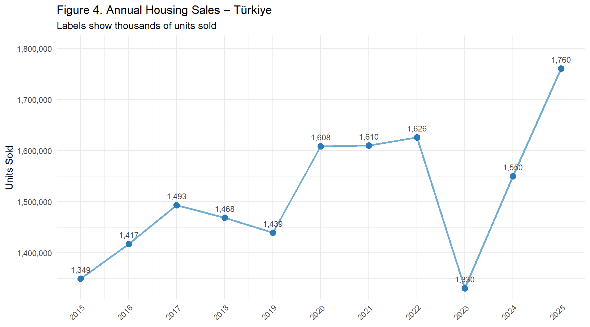
annual_exp <- eq %>%
group_by(Year, Expense_Type) %>%
summarise(Total = sum(Quantity, na.rm = TRUE), .groups = "drop")
top5 <- annual_exp %>%
group_by(Expense_Type) %>%
summarise(Grand = sum(Total), .groups = "drop") %>%
slice_max(Grand, n = 5) %>%
pull(Expense_Type)
ggplot(annual_exp %>% filter(Expense_Type %in% top5),
aes(x = Year, y = Total / 1e3, color = Expense_Type)) +
geom_line(linewidth = 0.9) +
geom_point(size = 2) +
scale_x_continuous(breaks = seq(2014, 2024, by = 2)) +
scale_y_continuous(labels = label_comma(accuracy = 1)) +
labs(title = "Figure 5. Annual Credit Card Expenditure – Top 5 Categories",
x = NULL, y = "Expenditure (Billion TRY)", color = "Category") +
theme_minimal(base_size = 11) +
theme(legend.position = "bottom",
legend.text = element_text(size = 8))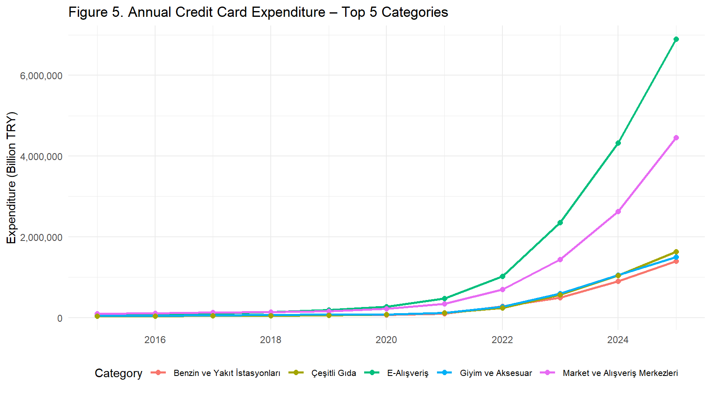
Credit card expenditure increased sharply in nominal terms after 2020. This does not necessarily mean that real consumption increased at the same rate; instead, it largely reflects the broader inflationary environment. Since housing prices, construction costs, and household expenditures are all affected by inflation, this variable is useful as a broad macroeconomic pressure indicator.
A correlation heatmap summarises the pairwise relationships between all key variables at once, providing a compact picture that makes the regression results easier to interpret.
corr_vars <- combined %>%
select(
HPI = Konut_Endeksi,
`USD/TRY` = USD,
`EUR/TRY` = EUR,
`CC Spend` = Total_CC,
Sales = Total_Sales
)
corr_mat <- cor(corr_vars, use = "complete.obs")
# Pivot to long — keep SAME order for both axes so diagonal is top-left to bottom-right
var_order <- c("HPI", "USD/TRY", "EUR/TRY", "CC Spend", "Sales")
corr_df <- as.data.frame(corr_mat) %>%
tibble::rownames_to_column("Var1") %>%
pivot_longer(-Var1, names_to = "Var2", values_to = "r") %>%
mutate(
Var1 = factor(Var1, levels = var_order),
Var2 = factor(Var2, levels = var_order)
)
ggplot(corr_df, aes(x = Var1, y = Var2, fill = r)) +
geom_tile(color = "white", linewidth = 0.5) +
geom_text(aes(label = sprintf("%.2f", r)), size = 3.5, fontface = "bold") +
scale_fill_gradient2(low = "#d7191c", mid = "white", high = "#2c7bb6",
midpoint = 0, limits = c(-1, 1),
name = "Pearson r") +
scale_y_discrete(limits = rev(var_order)) +
labs(title = "Figure 6. Correlation Heatmap of Key Variables",
x = NULL, y = NULL) +
theme_minimal(base_size = 11) +
theme(axis.text.x = element_text(angle = 30, hjust = 1))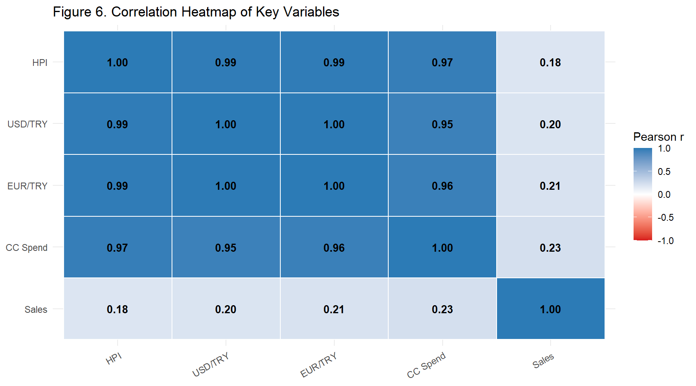
corr_results <- combined %>%
summarise(
`HPI vs USD/TRY` = cor(Konut_Endeksi, USD, use = "complete.obs"),
`HPI vs EUR/TRY` = cor(Konut_Endeksi, EUR, use = "complete.obs"),
`HPI vs CC Spend` = cor(Konut_Endeksi, Total_CC, use = "complete.obs"),
`HPI vs Sales` = cor(Konut_Endeksi, Total_Sales, use = "complete.obs")
) %>%
pivot_longer(everything(), names_to = "Variable Pair", values_to = "Pearson r") %>%
mutate(`Pearson r` = round(`Pearson r`, 3))
kable(corr_results,
caption = "Table 3. Pearson Correlations with House Price Index") %>%
kable_styling(bootstrap_options = c("striped", "hover"), full_width = FALSE)| Variable Pair | Pearson r |
|---|---|
| HPI vs USD/TRY | 0.990 |
| HPI vs EUR/TRY | 0.990 |
| HPI vs CC Spend | 0.973 |
| HPI vs Sales | 0.184 |
The correlation results confirm that the HPI has a very strong positive relationship with exchange rates and credit card spending. In contrast, housing sales have a much weaker relationship with the HPI. This supports the interpretation that nominal macroeconomic pressures are more closely aligned with housing price increases than sales volume. However, because all nominal variables trend upward over time, these correlations may partly reflect shared inflation dynamics and non-stationarity.
Time-series charts can visually exaggerate relationships because both series simply trend upward. A scatter plot directly tests whether the statistical relationship holds across individual observations.
ggplot(combined, aes(x = log(USD), y = log(Konut_Endeksi))) +
geom_point(alpha = 0.5, color = "#2c7bb6") +
geom_smooth(method = "lm", color = "#d7191c", se = TRUE) +
scale_x_continuous(labels = label_number(accuracy = 0.1)) +
scale_y_continuous(labels = label_number(accuracy = 0.1)) +
labs(title = "Figure 7. log(HPI) vs. log(USD/TRY) – Each Point is One Month",
x = "log(USD/TRY Rate)", y = "log(House Price Index)") +
theme_minimal(base_size = 11)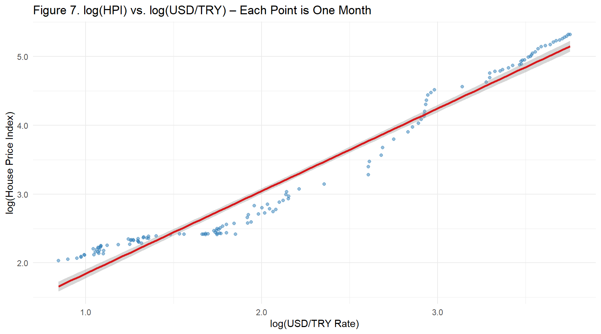
The scatter plot on log-transformed variables shows an extremely tight linear relationship with very little scatter, confirming that the correlation is not just a shared time trend artefact — the relationship is genuinely strong at all levels of the exchange rate.
# Dynamically find the top-growth region (excluding Türkiye national aggregate)
top_growth_region <- ks %>%
filter(Region != "Türkiye") %>%
group_by(Region) %>%
arrange(Date) %>%
summarise(
Growth_pct = (last(Konut_Endeksi) / first(Konut_Endeksi) - 1) * 100,
.groups = "drop"
) %>%
slice_max(Growth_pct, n = 1) %>%
pull(Region)
selected_regions <- unique(c(
"Türkiye", "İstanbul", "Ankara",
"Adana, Mersin", "Antalya, Burdur, Isparta",
"Konya, Karaman",
top_growth_region
))
ggplot(ks %>% filter(Region %in% selected_regions),
aes(x = Date, y = Konut_Endeksi, color = Region)) +
geom_line(linewidth = 0.8) +
scale_x_date(date_breaks = "2 years", date_labels = "%Y") +
scale_y_continuous(labels = label_comma(accuracy = 1)) +
labs(title = "Figure 8. House Price Index by Region",
x = NULL, y = "House Price Index", color = "Region") +
theme_minimal(base_size = 11) +
theme(legend.position = "bottom",
legend.text = element_text(size = 8))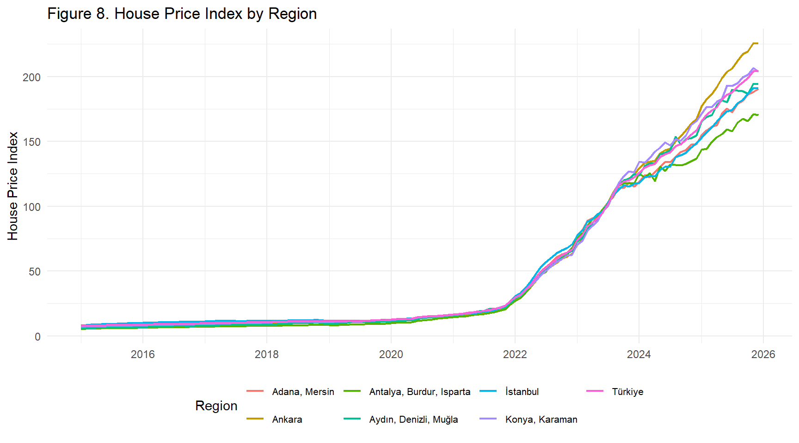
A ranked bar chart makes the growth comparison across all regions immediately interpretable — far clearer than overlapping line charts.
region_growth <- ks %>%
filter(Region != "Türkiye") %>%
group_by(Region) %>%
arrange(Date) %>%
summarise(
Growth_pct = (last(Konut_Endeksi) / first(Konut_Endeksi) - 1) * 100,
.groups = "drop"
)
ggplot(region_growth,
aes(x = reorder(Region, Growth_pct), y = Growth_pct, fill = Growth_pct)) +
geom_col(show.legend = FALSE) +
geom_text(aes(label = paste0(round(Growth_pct, 0), "%")),
hjust = -0.1, size = 3) +
scale_fill_gradient(low = "#abd9e9", high = "#08306b") +
scale_y_continuous(expand = expansion(mult = c(0, 0.12)),
labels = label_percent(scale = 1, accuracy = 1)) +
coord_flip() +
labs(title = "Figure 9. Total HPI Growth by Region (First to Latest Observation)",
x = NULL, y = "Growth (%)") +
theme_minimal(base_size = 10)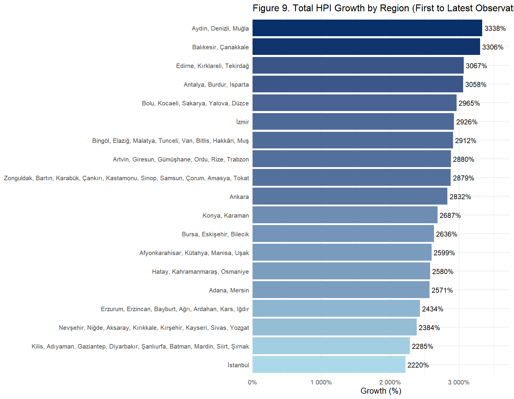
ks %>%
group_by(Region) %>%
arrange(Date) %>%
summarise(
`First HPI` = round(first(Konut_Endeksi), 1),
`Latest HPI` = round(last(Konut_Endeksi), 1),
`Growth (%)` = round((last(Konut_Endeksi) / first(Konut_Endeksi) - 1) * 100, 1),
.groups = "drop"
) %>%
arrange(desc(`Growth (%)`)) %>%
mutate(across(c(`First HPI`, `Latest HPI`), ~ format(.x, big.mark = ","))) %>%
kable(caption = "Table 4. HPI Growth by Region (First to Latest Observation)") %>%
kable_styling(bootstrap_options = c("striped", "hover"), full_width = FALSE)| Region | First HPI | Latest HPI | Growth (%) |
|---|---|---|---|
| Aydın, Denizli, Muğla | 5.7 | 194.2 | 3337.5 |
| Balıkesir, Çanakkale | 6.2 | 211.9 | 3306.1 |
| Edirne, Kırklareli, Tekirdağ | 6.2 | 196.1 | 3067.2 |
| Antalya, Burdur, Isparta | 5.4 | 170.2 | 3057.5 |
| Bolu, Kocaeli, Sakarya, Yalova, Düzce | 6.9 | 210.9 | 2964.8 |
| İzmir | 6.6 | 198.8 | 2926.5 |
| Bingöl, Elazığ, Malatya, Tunceli, Van, Bitlis, Hakkâri, Muş | 8.2 | 245.8 | 2912.4 |
| Artvin, Giresun, Gümüşhane, Ordu, Rize, Trabzon | 7.4 | 219.7 | 2880.3 |
| Zonguldak, Bartın, Karabük, Çankırı, Kastamonu, Sinop, Samsun, Çorum, Amasya, Tokat | 7.3 | 217.8 | 2879.1 |
| Ankara | 7.7 | 225.5 | 2831.9 |
| Konya, Karaman | 7.3 | 203.8 | 2687.3 |
| Bursa, Eskişehir, Bilecik | 7.4 | 203.0 | 2636.4 |
| Afyonkarahisar, Kütahya, Manisa, Uşak | 8.5 | 228.9 | 2599.2 |
| Hatay, Kahramanmaraş, Osmaniye | 8.1 | 216.3 | 2580.2 |
| Adana, Mersin | 7.1 | 190.7 | 2571.4 |
| Türkiye | 7.7 | 204.4 | 2571.4 |
| Erzurum, Erzincan, Bayburt, Ağrı, Ardahan, Kars, Iğdır | 9.8 | 247.8 | 2433.7 |
| Nevşehir, Niğde, Aksaray, Kırıkkale, Kırşehir, Kayseri, Sivas, Yozgat | 8.8 | 219.1 | 2384.5 |
| Kilis, Adıyaman, Gaziantep, Diyarbakır, Şanlıurfa, Batman, Mardin, Siirt, Şırnak | 8.8 | 210.4 | 2285.4 |
| İstanbul | 8.2 | 190.9 | 2219.8 |
İstanbul records the highest absolute index level, while Antalya and coastal regions have also seen strong growth driven by tourism and migration. Notably, interior Anatolian regions started from a much lower base but achieved comparable percentage growth, confirming the surge is a nationwide phenomenon rather than a metropolitan one.
To formally estimate the association between house prices and macroeconomic indicators, log-log regression models are used. Log transformation reduces the influence of scale differences and allows coefficients to be interpreted approximately as elasticities. Because this is a time-series dataset with strong trends, the model is interpreted as an explanatory association model rather than a causal forecast model.
model_data <- combined %>%
mutate(
log_HPI = log(Konut_Endeksi),
log_USD = log(USD),
log_EUR = log(EUR),
log_Sales = log(Total_Sales + 1),
log_CC = log(Total_CC + 1)
) %>%
filter(!is.na(log_HPI), !is.na(log_USD))m1 <- lm(log_HPI ~ log_USD, data = model_data)
as.data.frame(summary(m1)$coefficients) %>%
mutate(
Term = c("Intercept", "log(USD/TRY)"),
Estimate = round(Estimate, 3),
`Std. Error` = round(`Std. Error`, 3),
`t value` = round(`t value`, 2),
`p value` = format(round(`Pr(>|t|)`, 4), nsmall = 4)
) %>%
select(Term, Estimate, `Std. Error`, `t value`, `p value`) %>%
kable(row.names = FALSE,
caption = sprintf("Table 5. Baseline Model – R² = %.3f",
summary(m1)$r.squared)) %>%
kable_styling(bootstrap_options = c("striped"), full_width = FALSE)| Term | Estimate | Std. Error | t value | p value |
|---|---|---|---|---|
| Intercept | 0.644 | 0.052 | 12.49 | 0.0000 |
| log(USD/TRY) | 1.200 | 0.022 | 55.03 | 0.0000 |
The baseline model indicates that USD/TRY alone explains a very large share of the variation in the national House Price Index. The positive elasticity means that higher exchange rates are strongly associated with higher house prices. This result is economically plausible because exchange rate depreciation can raise construction material costs, imported input prices, and inflation expectations.
m2 <- lm(log_HPI ~ log_USD + log_Sales + log_CC, data = model_data)
as.data.frame(summary(m2)$coefficients) %>%
mutate(
Term = c("Intercept", "log(USD/TRY)", "log(Sales)", "log(CC Spend)"),
Estimate = round(Estimate, 3),
`Std. Error` = round(`Std. Error`, 3),
`t value` = round(`t value`, 2),
`p value` = format(round(`Pr(>|t|)`, 4), nsmall = 4),
Sig = case_when(
`Pr(>|t|)` < 0.001 ~ "***",
`Pr(>|t|)` < 0.01 ~ "**",
`Pr(>|t|)` < 0.05 ~ "*",
TRUE ~ ""
)
) %>%
select(Term, Estimate, `Std. Error`, `t value`, `p value`, Sig) %>%
kable(row.names = FALSE,
caption = sprintf("Table 6. Full Model – R² = %.3f",
summary(m2)$r.squared)) %>%
kable_styling(bootstrap_options = c("striped"), full_width = FALSE)| Term | Estimate | Std. Error | t value | p value | Sig |
|---|---|---|---|---|---|
| Intercept | -8.956 | 0.820 | -10.92 | 0.0000 | *** |
| log(USD/TRY) | 0.256 | 0.062 | 4.12 | 0.0001 | *** |
| log(Sales) | -0.120 | 0.045 | -2.68 | 0.0084 | ** |
| log(CC Spend) | 0.679 | 0.044 | 15.55 | 0.0000 | *** |
Adding sales and credit card expenditure slightly improves the model fit. USD/TRY remains the dominant explanatory variable, while the sales coefficient helps capture the divergence between rising prices and weakening transaction activity. Credit card expenditure should be interpreted as a broad nominal/inflation proxy rather than a direct housing demand variable.
model_data$Fitted <- fitted(m2)
model_data$Residuals <- residuals(m2)
ggplot(model_data, aes(x = Date)) +
geom_line(aes(y = log_HPI, color = "Actual"), linewidth = 0.9) +
geom_line(aes(y = Fitted, color = "Fitted"),
linewidth = 0.9, linetype = "dashed") +
scale_color_manual(values = c("Actual" = "#2c7bb6", "Fitted" = "#d7191c")) +
scale_x_date(date_breaks = "2 years", date_labels = "%Y") +
labs(title = "Figure 10. Actual vs. Fitted log(HPI) – Full Model",
x = NULL, y = "log(House Price Index)", color = NULL) +
theme_minimal(base_size = 11) +
theme(legend.position = "top")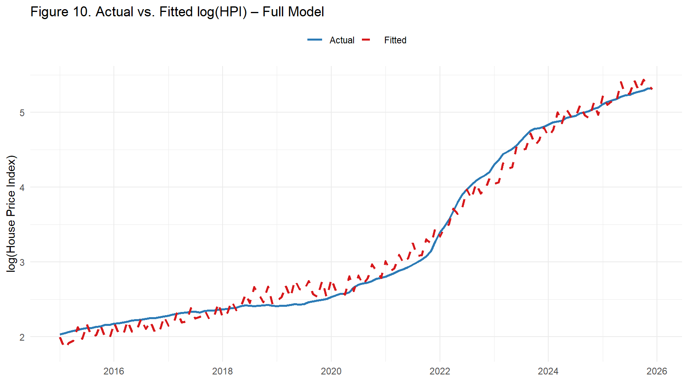
The fitted values closely follow the actual log(HPI) series, including the acceleration after 2020. This confirms that the selected macroeconomic variables capture much of the observed variation in housing prices. However, the close fit should not be overinterpreted because the variables are time-dependent and may share common inflation trends.
ggplot(model_data, aes(x = Fitted, y = Residuals)) +
geom_point(alpha = 0.5, color = "#2c7bb6") +
geom_hline(yintercept = 0, color = "#d7191c", linetype = "dashed") +
geom_smooth(method = "loess", se = FALSE, color = "#f46d43", linewidth = 0.8) +
scale_x_continuous(labels = label_number(accuracy = 0.1)) +
scale_y_continuous(labels = label_number(accuracy = 0.01)) +
labs(title = "Figure 11. Residuals vs. Fitted Values",
x = "Fitted log(HPI)", y = "Residuals") +
theme_minimal(base_size = 11)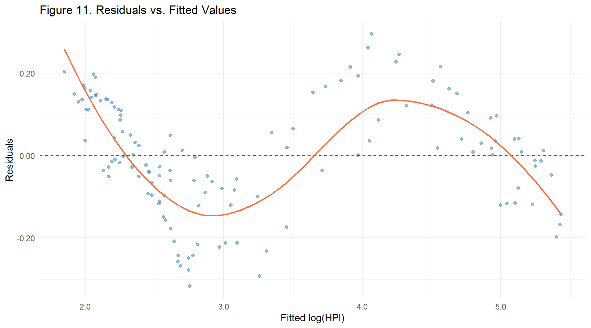
The residual plot shows that errors are small and close to zero for most of the fitted range. A slight curvature appears at the upper end (high fitted values corresponding to 2022–2023), indicating mild non-linearity during the most extreme depreciation phase — the period most difficult to model with a simple log-linear specification.
The model closely tracks the actual index throughout the sample, including the inflection point around 2021. The largest residuals cluster in 2022, coinciding with the sharpest TRY depreciation — possibly reflecting structural breaks not captured by the log-linear form.
The empirical results indicate that housing prices in Türkiye increased in close association with exchange rate depreciation and broader nominal inflation conditions. The strongest statistical relationship is observed between the House Price Index and USD/TRY. Credit card expenditure also moves closely with housing prices, but it is better interpreted as a proxy for general nominal expansion rather than as a direct causal factor. Housing sales, on the other hand, do not rise in proportion to prices, suggesting that affordability constraints became more important over time.
The model explains a very high share of the variation in log(HPI), but this high explanatory power should be interpreted carefully. Türkiye experienced a period of strong inflation, currency depreciation, and nominal price increases across many markets. Therefore, some of the observed correlation may reflect shared macroeconomic trends rather than independent causal effects. The year-over-year robustness model and diagnostic plots are included to reduce this concern and to make the interpretation more statistically credible.
Overall, the evidence supports the conclusion that exchange rate depreciation, inflationary pressures, and cost-side dynamics are central to understanding the rise in house prices. At the same time, the findings do not prove that exchange rates alone caused the increase. A more advanced future study could include inflation-adjusted house prices, interest rates, mortgage loan volumes, construction cost indices, population/migration variables, and time-series methods such as VAR or error-correction models.
House prices increased dramatically after 2020. The national House Price Index shows a sharp acceleration, especially during the 2021–2023 period.
Exchange rate depreciation is the strongest macroeconomic correlate. USD/TRY and HPI move very closely together, and the log-log regression shows a strong positive association between exchange rates and housing prices.
The increase is not explained by sales volume alone. Housing sales are volatile and do not rise proportionally with prices, which supports the interpretation of affordability-driven demand compression.
Credit card spending reflects the broader nominal inflation environment. Its strong relationship with HPI should be understood as evidence of general nominal expansion rather than direct housing demand.
The price surge is nationwide but regionally uneven. İstanbul and coastal regions reach high index levels, while many other regions also experience substantial percentage growth.
The results are statistically strong but should be interpreted cautiously. Since the variables are non-stationary and trend upward over time, the project shows strong association rather than definitive causality.
Further research could improve causal interpretation. Inflation-adjusted prices, interest rates, mortgage data, construction cost indices, and dynamic time-series models would make the analysis stronger.
Note: Portions of the Python preprocessing code were developed with assistance from AI language model tools, as disclosed in the preprocessing section. All analytical code in R, narrative interpretation, and conclusions are the authors’ own work.
Central Bank of the Republic of Türkiye (TCMB). (2024). Electronic Data Delivery System (EVDS). Retrieved from https://evds2.tcmb.gov.tr/